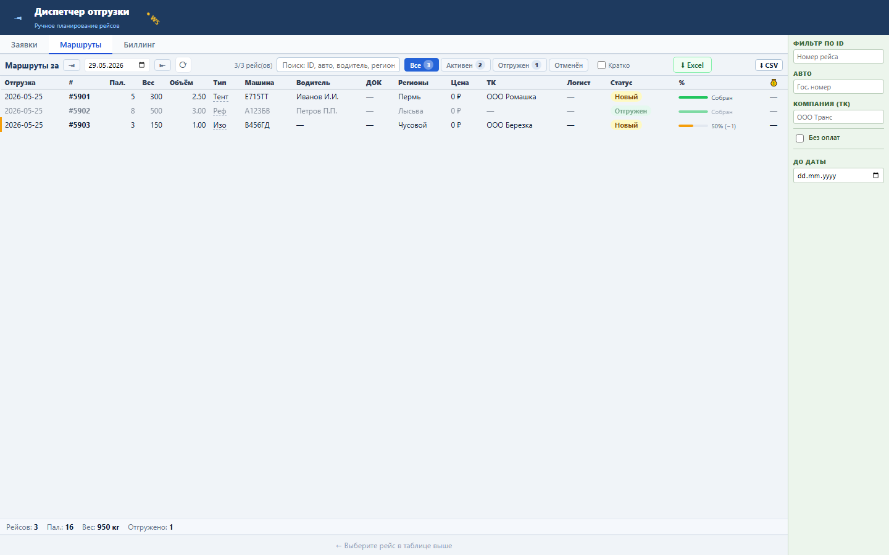
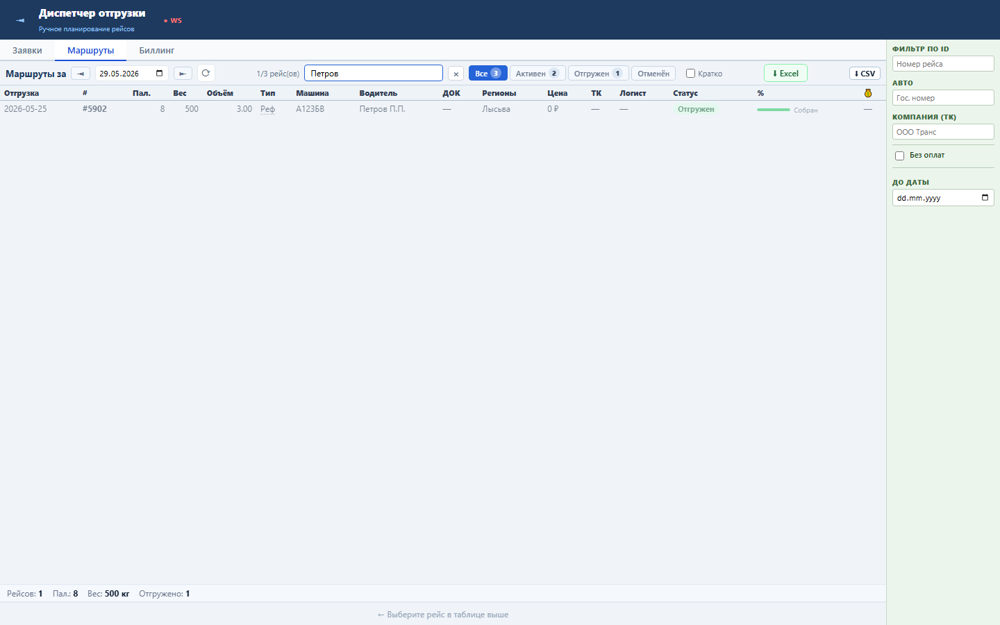
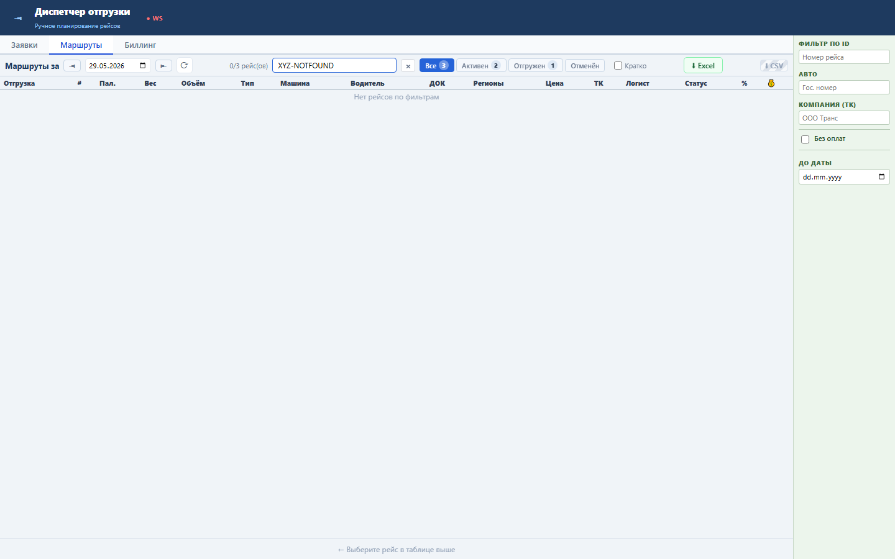

Блок помогает диспетчеру быстро найти рейс по номеру, машине, водителю, региону или транспортной компании без нового запроса к серверу.
Поиск работает на клиенте по загруженному списку tasks после фильтра статуса. Поля: ID, TRANSPORT, VODITEL_NAME, REGIONS, TK_NAME.
Sprint 59 закрыт functional, load и UI smoke проверками.


